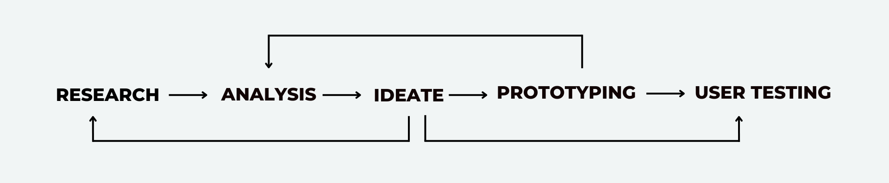

Kisasa Sanaa Web App
Problem
Artists in Kenya grapple with a of exhibition spaces, especially outside major cities. This shortage restricts their visibility, market reach, and growth opportunities. The importance for accessible spaces is vital to showcase their work and cultivate a flourishing artistic community.
Solution
The Kisasa Sanaa Platform is a responsive web application that aims to promote accessibility in the Kenyan art scene by fostering a global online space for artists. This project empowers artists to showcase their work to a global audience, breaking down geographical barriers and extending reach beyond traditional galleries.
Role
User Research
User Experience(UX) Design
Visual Design
Project
Google UX Design Professional Certificate: Capstone Project
Timeline
8 weeks (2024)
Tools Used
Figma
Photoshop
Miro
Fig Jam
Design Process
Home Page
This page display the trending pieces and featured artists


Browse Page
This page displays searched images acroding to sert filters and key words
Product Page
This page shows the details ofthe selected artwork and the artist. Additionally it has a call to action button that initiates the checkout process.

.svg)
Checkout Page
This page displays the form a user would fill to checkout the artwork they want.
RESEARCH
User-Centric Research
My design process began with a commitment to understanding user needs and market dynamics. I embarked on a comprehensive user research initiative to gain a deep understanding of user behavior and current attitudes towards art visibility.
This research took a multi-pronged approach:
I conducted in-depth interviews with a diverse range of stakeholders within the art market. This
included art collectors, established and emerging artists, and art gallery representatives. Through these interviews, I was able to
delve into their motivations, frustrations, and desired experiences related to discovering and acquiring art.
To reach a broader audience and gather quantitative data, I designed and deployed user surveys. The
surveys captured demographics, art purchasing habits, and preferences regarding online art platforms.
Debunking Initial Assumption
The user research proved instrumental in shaping the project's direction. My initial assumption of an oversaturated art market was challenged by the data. Instead, the research revealed a more nuanced picture. While the art market is indeed dynamic, a key finding emerged – emerging artists face significant hurdles in attaining visibility for their work due to the absence of established platforms tailored to their needs.
Initial assumption
The art market is oversaturated making it difficult for newer artists to gain recognition
This critical insight became the cornerstone of the project, informing subsequent ideation phases. By focusing on the needs of emerging artists , the project aimed to develop a solution that bridged the gap in art visibility and empowered a new generation of creators.
User Pain Points
The following user painpoints assertained the need to focus on women in the community as the target audience.
How Might I Questions
Using data from the preliminary research I came up with how might we questions that would guide how I intepreted the research points and ideated a potential solution.
With a clearer view on the research findings I created a clear problem statement to guide the rest of the design process.
Problem Statement
The art market is characterized by a disconnect between enthusiasts and artists, with enthusiasts encountering challenges in discovering desired pieces, established artists facing limited online visibility, and emerging artists lacking exhibition opportunities
User Persona
To better guide the design and enable me to empathize with our users, I further synthesized the preliminary research results and came up with the following persona

User Journey Map
I used a user journey map to visually depict the actions, emotions, and thought processes of the target users, an art collector, as they navigate the process of acquiring art. This approach helps identify pain points and opportunities to create a delightful user experience.

DESIGN
Right from the start, accessibility was a major priority for this solution. To make sure it reached the widest audience possible, I opted for a responsive web application. This decision followed a comprehensive analysis of existing art platforms and leading e-commerce solutions, like Kilimall.
A responsive web application offers a seamless user experience across different devices, from desktops and laptops to tablets and smartphones. This eliminates the need for platform-specific downloads, making the platform truly accessible to a wider audience.
Initially, I considered the idea of including an events section. However, after taking a closer look at the landscape, I realized existing social media platforms like Nairobi Now and Hustle Sasa were already doing a fantastic job of event discovery. By focusing solely on art sales and promotion, this platform can offer a more laser-focused solution to the user's core problem.
Design Decision
To ensure platform-agnostic accessibility, I opted for a responsive web application design, maximizing reach and eliminating the need for platform-specific downloads.
Informed by user research, the sitemap prioritizes the core shopping experience by meticulously structuring the information hierarchy on the platform.

Ideate with crazy 8s
In the initial wireframing stage, I leveraged the Crazy 8s technique to rapidly generate a variety of design ideas. This focus on rapid iteration allowed me to explore numerous possibilities while keeping the core user experience
I then translated these initial ideas into low-fidelity wireframes, prioritizing essential features identified in the research phase. Here, I opted for a pen-and-paper
approach to focus on core functionality and user flow before adding visual complexity.

Following the initial wireframes, I translated the core user flow and functionalities into low-fidelity mockups. These initial visual
representations provide a clear understanding of the layout and information hierarchy.
Click here to experience the interactive lofi prorotype

Refining the Design, Usability Testing Insights
To evaluate the user experience and ensure the platform effectively meets user needs, I conducted a remote moderated usability study using low-fidelity mockups with a group of 5 participants.
The valuable feedback received led to the following key findings
Design Changes
In response to insights gained from the usability study, I enhanced the site's browsing page. Notably, I introduced a shape change to distinguish between artwork and artist profiles. This
modification is intended to elevate the overall user experience by enhancing visual clarity and differentiation.

The checkout process was further enhanced by integrating a visual progress bar at the top. This user-friendly feature provides clear guidance throughout the checkout journey, keeping users
informed of their progress and reducing potential confusion.

Unveiling the Vision: High-Fidelity Mockups
Building on user research and testing, i came up with these high-fidelity mockups for the mobile design. The refined visuals integrate valuable user feedback, enabling an evaluation of the user experience before development begins.

This is a video of the hi-fi protoype created in Figma. Device: mobile tablets
Designing for Everyone
Accessibility was a core principle throughout the design process. Here's how I ensured a seamless experience for all users
I utilized negative space throughout the app to minimize visual clutter . This improves readability, sharpens
focus, and ultimately creates a more enjoyable user experience.
REFLECTIONS
Challenges
Limited access to users. Due to budget constaints, recruiting a large and diverse user base for testing proved challenging. This meant I had to be creative in my approach to gather valuable user insights.
Balancing visual design with usability. Initially, I prioritized aesthetics, but user testing revealed confusion with some interactive elements. To address this, I embraced an iterative approach through multiple rounds of usability testing. This ensured my design remained visually engaging while effectively meeting user needs.
Impact
In this study, my objective was to address common issues faced by users and evaluate the impact of UX design on mood and decision-making process. Through conducting this research and design, I gained a deeper understanding of how user experience can be influenced emotions and choices.
Lessons learnt
The key lesson for me is the importance of consistently involving users throughout the design process, ensuring the creation of a user-centered product while staying aligned with impactful trends in UX design.